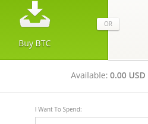

Quri Manuals
Step 2: Buying and selling Bitcoin - Bitstamp
You buy and sell digital currencies like Bitcoin on an exchange. Think of it like an online foreign exchange market. You can trade USD, Euros, etc. for Bitcoin, Ethereum and other digital currency depending on the exchange you use.
Bitstamp is a reputable exchange where you can buy Bitcoin and other digital currency. Bitstamp has lower fees than many other exchanges.
Setup Your Account
 Go to www.bitstamp.net and register via the link on the top right.
Go to www.bitstamp.net and register via the link on the top right.Follow the instructions given in the confirmation email. Do not lose your Client ID, as you will need it to login.
BitStamp has a rigorous verification process up front. You will need to provide BitStamp with an image of a valid government issued ID (driver’s license or passport will work) and proof of residency (utility bill or bank statement) before you can begin transacting on BitStamp. This is so Bitstamp can comply with the same Know Your Customer laws that banks follow.
Once you login, go to the verification page and watch the video instructions before proceeding with verifying your account.
Depositing Funds Into Your Bitstamp Account
You may purchase digital currency using USD, Euro, Yen, etc. by wiring funds to BitStamp. There are slightly different procedures to wire money to your account depending on where you live. See below.
 Please note, that for small amounts you might want to purchase Bitcoin on Bitstamp with a Visa or MasterCard credit/debit card. See Buying Bitcoin section below for how to do it.
Please note, that for small amounts you might want to purchase Bitcoin on Bitstamp with a Visa or MasterCard credit/debit card. See Buying Bitcoin section below for how to do it.
For US, Japan, and other non-European users:
Click on the "Deposit" option at the top toolbar.
 Select “International Bank”.
Select “International Bank”.
 Fill out your name and how much you would like to deposit. You are then sent to a screen with instructions to wire money to your BitStamp account.
Fill out your name and how much you would like to deposit. You are then sent to a screen with instructions to wire money to your BitStamp account.
 You must include the message number provided in your bank’s wire transfer message box in order for the funds to be credited to your account. You will receive your funds in 5-7 business days.
You must include the message number provided in your bank’s wire transfer message box in order for the funds to be credited to your account. You will receive your funds in 5-7 business days.
For European users:
Click on the "Deposit" option at the top toolbar.
- Select “EU Bank (SEPA)”.
- Fill out your name and how much you would like to deposit. You are then sent to a screen with instructions to wire money to your BitStamp account.
- You must include the message number provided in your bank’s wire transfer message box in order for the funds to be credited to your account. You will receive your funds in 5-7 business days.
Buying Bitcoin
Click the “Buy/Sell” option at the top toolbar.
 You will see options on the left side for Instant Order, Limit Order, Market Order, and Stop Order. You will be able to purchase Bitcoin using these functions once you have deposited USD, Euro, Yen, etc. in your account. See above for how to deposit.
You will see options on the left side for Instant Order, Limit Order, Market Order, and Stop Order. You will be able to purchase Bitcoin using these functions once you have deposited USD, Euro, Yen, etc. in your account. See above for how to deposit.To buy Bitcoin after you have deposited funds, just click “Instant Order” and input the amount you want to spend. BitStamp will auto-adjust for the lowest price of Bitcoin on the order book.
 You can also purchase Bitcoin on Bitstamp with a Visa or MasterCard credit/debit card. Just click on “Buy Bitcoin With Credit Card”. Only a one-time verification of your card details is required before you can instantly purchase bitcoin on Bitstamp. Choose the amount you would like to spend, enter your card details and click "Submit".
You can also purchase Bitcoin on Bitstamp with a Visa or MasterCard credit/debit card. Just click on “Buy Bitcoin With Credit Card”. Only a one-time verification of your card details is required before you can instantly purchase bitcoin on Bitstamp. Choose the amount you would like to spend, enter your card details and click "Submit".
Selling Bitcoin
Click the “Buy/Sell” option at the top toolbar.
Select “Sell BTC” and input the amount.
You sell Bitcoin using the same options on the left side: Instant Order, Limit Order, Market Order, and Stop Order. Your USD is held in your Bitstamp account once you complete your Bitcoin sale. See below for how to withdraw USD from your Bitstamp account and move them to your bank account.
Withdrawing Funds From Your BitStamp Account
Withdraws work the same way as deposits. BitStamp wires the currency of your choice back to you.
For US, Japan, and other non-European users:
Click the "Withdrawal" button in the upper panel
- Select “International Bank”.
 You are then sent to a screen with instructions to wire money to your bank account. Fill out the information as required.
You are then sent to a screen with instructions to wire money to your bank account. Fill out the information as required.
For European users:
Click the "Withdrawal" option at the top toolbar.
- Select “EU Bank (SEPA)”.
You are then sent to a screen with instructions to wire money to your bank account. Fill out the information as required.
Send Bitcoin to your Jaxx/Copay wallets
Always send your Bitcoin to your personal Jaxx or Copay wallet if you want to hold it for more than a few days.
Click the "Withdrawal" option at the top toolbar.
Select “Bitcoin”.
Enter your Bitcoin receiving address that you copied from Jaxx/Copay into the “Destination Bitcoin Address”.
Remember, you can copy your receiving address in Jaxx by clicking the copy button next to your Bitcoin address and in Copay by clicking on the QR Code.

 Enter the amount of Bitcoin you would like to withdraw.
Enter the amount of Bitcoin you would like to withdraw.  Click the "Withdraw" button
Click the "Withdraw" button
Receiving Bitcoin from Jaxx wallet
If you stored your Bitcoin in your Jaxx/Copay wallet and you now want to sell it, send your Bitcoin to Bitstamp to sell it for USD, Euro, Yen, etc.
Click on the "Deposit" option at the top toolbar.
Select “Bitcoin”.
Your Bitstamp wallet address will be highlighted.
 In your Jaxx wallet, copy and paste that address in your “Receiving Address” bar after you select “Send”, choose an amount, and click "Send" button.
In your Jaxx wallet, copy and paste that address in your “Receiving Address” bar after you select “Send”, choose an amount, and click "Send" button. 
 If you are using Copay wallet, select “Send” and then follow the instructions to paste the recipient address in the toolbar.
If you are using Copay wallet, select “Send” and then follow the instructions to paste the recipient address in the toolbar.  This is then followed by the amount you want to send.
This is then followed by the amount you want to send.
Next >> Buying and selling Bitcoin using cash at stores, in banks, ATMs, and in person.